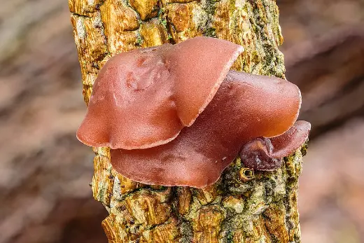

Wild mushroom · All year
Jelly ear
Auricularia auricula-judae
Also called Judasohr
Jelly ear is a wild mushroom you can forage all year round across Germany. Rubbery, brown, ear-shaped fungus on elder branches, all year round.

Caution. Always cook it.
When is jelly ear in season in Germany?
Jelly ear is usually in season all year round. Timing shifts with weather, latitude and altitude.
Where does jelly ear grow in Germany?
Jelly ear grows across Germany. Regions: North German lowlands and coast, West, East, South and the Alps.
How do you recognise jelly ear?
Rubbery, brown, ear-shaped fungus on elder branches, all year round.
How do you harvest jelly ear?
Twist or cut mushrooms at the base, brush off soil in the woods and carry them in a basket, never a plastic bag. Only take ones you're 100% sure of, leave old and very young ones, and follow local limits.
How do you eat jelly ear?
Sliced in stir-fries and hot-and-sour soup; dries perfectly.
How do you store jelly ear?
Dry.
What is jelly ear good for?
Iron & calcium.